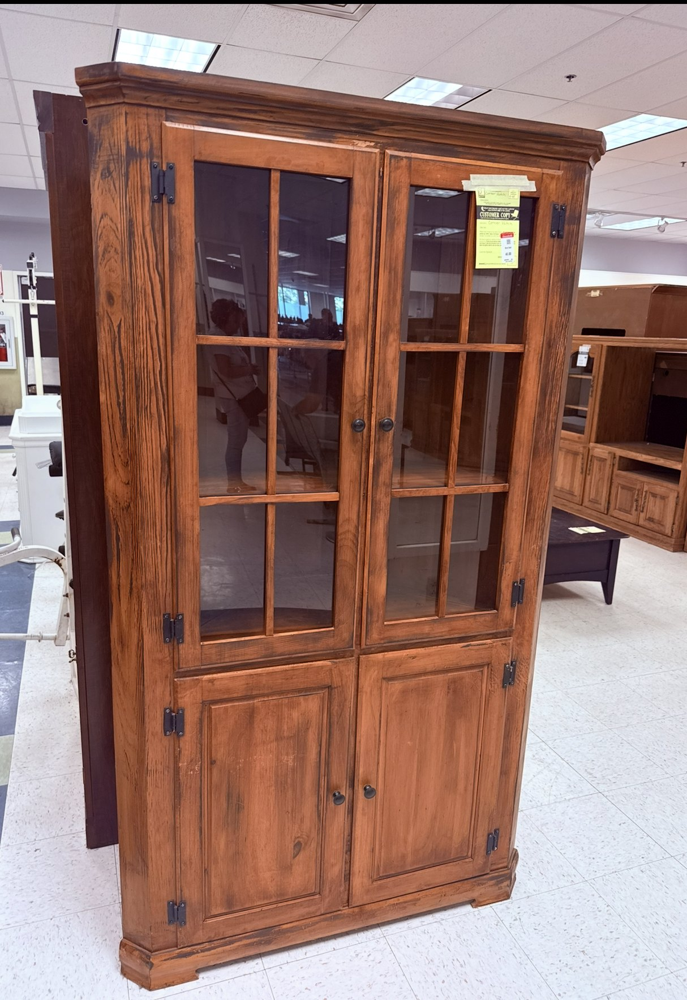
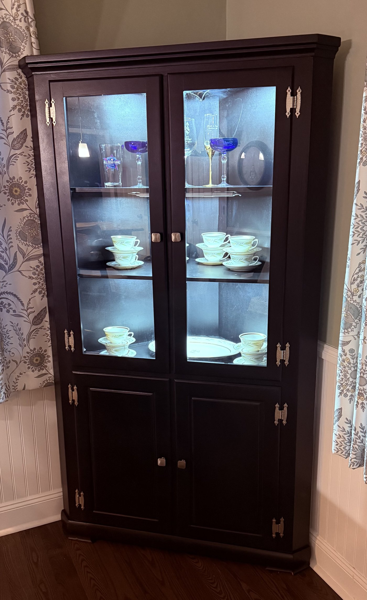

First piece
Corner display cabinet
A solid wood corner cabinet with good bones under a tired orange finish. Stripped back to bare wood, joints and door fit corrected, then sprayed with Graco equipment in Sherwin-Williams Emerald, semi-gloss, color-matched to Caviar — a near-black that reads deep charcoal in daylight and wipes clean.
The upper case was rebuilt for display: glass shelving in place of the original wood, custom interior LED lighting wired in to light each shelf, and all-new hardware: Amerock hinges in brushed nickel and Franklin Brass Classic square pulls to match. The lower doors stay solid for closed storage.
- Found
- Local resale floor, September 2026
- Wood
- Solid wood, corner profile
- Finish
- Sherwin-Williams Emerald in Caviar, semi-gloss, sprayed with Graco
- Hardware
- Amerock brushed nickel hinges, Franklin Brass Classic square pulls
- Details
- Glass display shelving, custom interior LED lighting, closed lower storage